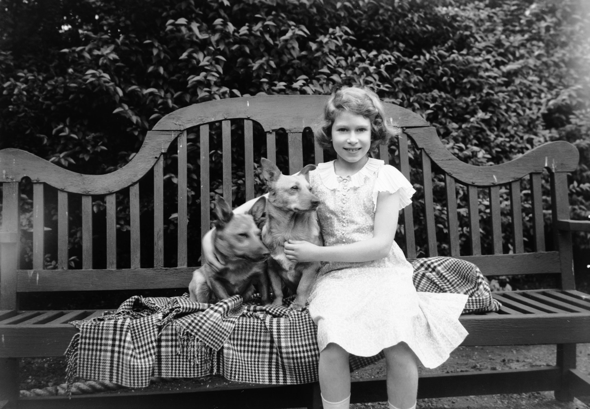

Queen Elizabeth was born on the 21st April 1926 and was the first child of King George VI and Queen Elizabeth The queens mother.When she was younger,she was called Lilibet by her close family and she was cherrished by her grandfather George V who she called "Grandpa England". Four years later her younger sister Princess Margaret was born on the 21st of August 1930.The two Princess had a shelterd childhood since they were home schooled by their mother and governer.They mainly studied english literature,languages,music and history.In 1950 a book was published by their governer Marrion Crawford called Little Princess and in the book which describes things like Elizabeths liking in dogs and horses
When the war first broke out,Elizabeth was 13 and her sister was 9.Both the Princesses were evacuated to Winsor castle as their parents thought that it would be safer there than at buckingham palace. Then in 1944,when the princess turned 18 she signed up for service as she wanted "to do her part" for the war just like her peers.But her signing up for service was an unpresedented decicion. She was the first woman in the royal family to be a full time member of the armed services.While she was training,she was treated like everyone else it was only in the evening that she went home to Winsor castle.In 1245 she passed her test of being a mechanic and motor driver and then later on graduated as a fully qualified driver. But just as she finished her training,the war had ended so she was not able to use any of her newly learnt skills.
Queen Elizabeth was the mother of 4 childern.The eldest child being King Charles who was born on the 14th November 1948 3 years after ther war.Next was Princess Margaret Elizabeths only daughter who was born in 1950 August 15th. Then ten years later , her 2nd son Prince Andrew was born.Lastly, on the 10th of March, Prince Edward was born. Unfortunatly, on the 9th April 2021 Prince Phillp passed awway of old age. Not long later, Englands longest reining monarch passed away on the 8th of September 2022